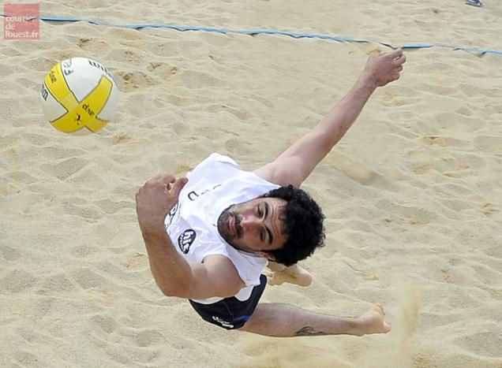

Après avoir essayé différents sports à l'adolescence je me suis arrêté sur le volley-ball sport aérien ou la technique a une part importante dans le jeu.
J'ai commencé la pratique de ce sport en 2004 à l'UNSS au lycée. J'ai ensuite très vite intégré une équipe de régional2 : le volley-Ball Club de Saint Joseph club de ma ville. J'ai commencé au poste de réceptioneure attaquant mais très vite devant l'évidence j'ai atterri au poste de central, poste que j'occupe encore aujourd'hui.
J'ai ensuite passé mes diplômes d'arbitre et d'entraineur en 2010
Joueur de Régional 2 au poste de central au Volley-Ball Club de Saint Joseph sur île de la Réunion.
de 2008 à 2011
Joueur de Régional 2 au poste de central au Volley-Ball Club de Petite-île sur île de la Réunion.
Entraineur des équipes Cadets et Cadettes, Minime Filles, Poussins.(bénévole de 2008 a 2010 et salarié de 2010 à 2011)
2011-2013
Joueur de Régional 2 au poste de central à Leclerc Cholet Volley à Cholet.
Entraineur des Baby, Cadets masculin, Détente, Départementale masculine.(bénévole)
2013-2014
Joueur de Régional 2 au poste de central à Leclerc Cholet Volley à Cholet.
Entraineur des Baby, Cadets masculin, Détente, Départemental masculine et Régional 2 féminine.(bénévole)
Champion départemental avec l'equipe de d1 de Cholet et champion régional avec l'équipe R2 féminine de Cholet